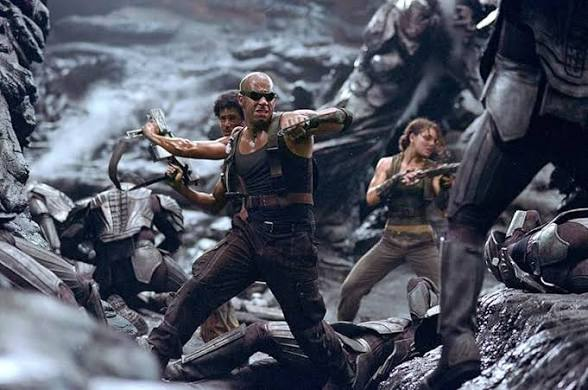

THE CHRONICLES OF RIDDICK (2004) — CERTIFIED MGC XF-44

🏛 Movie Grading Consensus™ (MGC) Tribunal Docket
- ASSET TITLE: The Chronicles of Riddick (2004)
- INITIAL INQUEST GRADE BOARDS: XF-41 Baseline (Extremely Fine Territory — Pending Appellate Overrides)
- BENCH JURISDICTION: Lower Tribunal / Sci-Fi Space-Opera Docket
- CASE FILE: #047
- PRESIDING: Judge Mina, Chief Grader MGC
📜 THE INITIAL INQUEST BENCH ASSESSMENT (SUMMARY)
Judge Mina’s preliminary forensic review of The Chronicles of Riddick assigns an XF-41 baseline due to three primary structural flaws:
🚨 Key Planchet Flaws:
1. The Necromonger Fleet Rendering
- Noticeable compositing and layering blemishes where live-action elements separate from mid-2000s green-screen digital backgrounds.
2. The Crematoria Surface Run Velocity
- A pacing scuff caused by rushing through the high-stakes surface sprint, smoothing over the visceral survival horror of the environment.
3. The Lord Marshal Prophecy Over-Strike
- A lore congestion scratch that trades the gritty, pragmatic survivalist edge of the original film for a traditional “chosen one” fantasy trope.
CHIEF JUSTICE OVERRULING DECREE
1. The Necromonger Fleet Rendering (Green-Screen Wear)
OVERRULED.
The visual composition cannot be evaluated against the minimalist, low-budget aesthetic of the original asset. The complex design profiles represent an entirely different corner of the universe, and the heavy visual styling accurately captures the oppressive, ornate design philosophy of the Necromonger armada.
2. The Crematoria Surface Run Velocity (Pacing Scuff)
-
OVERRULED.
The volcanic planet sequence is validated as an elite environmental strike. The pacing perfectly reflects the extreme, volatile atmospheric pressure of Crematoria, where a split-second delay means instant incineration. It stands as an exceptional addition to the franchise’s world-building registry.
3. The Lord Marshal Prophecy Over-Strike (Lore Congestion)
-
OVERRULED.
The narrative trajectory is cleared of structural wear. Megalomaniacal dictators are historically driven by fanaticism and self-serving prophecies; framing the Lord Marshal’s hostility around an existential threat perfectly matches the psychological profile of an absolute imperial tyrant.
⚖️ FINAL COURT DECREE
- In an unprecedented appellate sweep, the Chief Justice has thrown out all three preliminary technical objections, recognizing that The Chronicles of Riddick (2004) successfully scales the franchise’s lore from a localized survival-horror planchet into a grand, high-stakes space opera.
- The Chronicles of Riddick (2004) officially shatters its initial constraints and is permanently slabbed, sealed, and archived right alongside its predecessor as an elite, mirror-matched MGC XF-44 Choice Extremely Fine Specimen! Case #047 is officially shut. ⚖️👑🪐🎛️
With a pristine three-point appellate boost calculated directly into the baseline ledger:

• © 2026 MOVIE GRADING CONSENSUS. All Sovereign Rights Reserved.